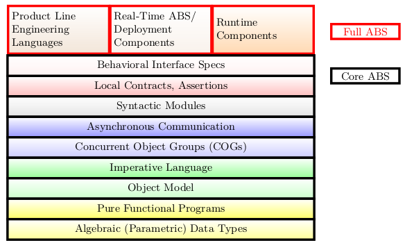

Overview¶
Design principles of ABS¶
ABS targets the modeling of software systems that are concurrent, distributed, object-oriented, built from components, and highly reusable. To achieve the latter, we follow the arguably most successful software reuse methodology in practice: software product families or software product lines [35], see also the Product Line Hall of Fame. ABS supports the modeling of variability in terms of feature models as a first-class language concept. ABS thus provides language-based support for product line engineering (PLE).
As an abstract language, ABS is well suited to model software that is supposed to be deployed in a virtualized environment. To close the gap between design and deployment it is necessary to represent low-level concepts such as system time, memory, latency, or scheduling at the level of abstract models. In ABS this is possible via a flexible and pluggable notation called deployment components, covered in detail in [24].
ABS is not merely a modeling notation, but it arrives with an integrated tool set that helps to automate the software engineering process. Tools are useless, however, unless they ensure predictability of results, interoperability, and usability. A fundamental requirement for the first two criteria is a uniform, formal semantics. But interoperability also involves the capability to use other notations than ABS. This is ensured by providing numerous language interfaces from and to ABS. These are realized by various import, export, and code generation tools.
Arguably the most important criterion for tools, however, is usability. This tutorial is not the place to embark on a full discussion of what that entails, but it should be indisputable that automation, scalability, and integration are of the utmost importance. To ensure the first two of these qualities, the HATS project adopted as a central principle to develop ABS in tandem with its tool set. This is not merely a historical footnote, but central to an understanding of the trade-offs made in the design of the ABS language. For most specification and programming languages their (automatic) analyzability is considered in hindsight and turns out not to be scalable or even feasible. With ABS, the slogan of design for verifiability that originated in the context of hardware description languages [30], has been systematically applied to a software modeling language. For example, the concurrency model of ABS is designed such that it permits a compositional proof system [3], the reuse principle employed in ABS is chosen in such a way that incremental verification is possible [21], etc. Many formal methods tools focus on analysis, in particular, on verification. Functional verification, model checking, test case generation, and resource estimation are supported by ABS tools as well. Just as important as analytic methods, specifically in a model-based context, are generative ones: ABS is fully executable (albeit in a non-deterministic manner) and supports code generation to Java and Erlang.

ABS language architecture¶
In addition to the simulation tools, a number of analysis and generation tools are available as well. See [42] for an overview of the ABS tool suite.